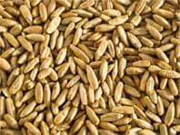

Κόψτε το κάπνισμα εύκολα!

Χωρίς να νιώθετε την ανάγκη να καπνίσετε

Χωρίς σύνδρομο αποχής

Χωρίς βιβλία και ύπνωση

Χωρίς φάρμακα και έμπλαστρο νικοτίνης
Παραγγείλετε τώρα με έκπτωση
Πότε κάνατε свою το πρώτο σας τσιγάρο,
σίγουρα θέλατε να παραμείνετε καπνιστής
για όλη σας την ζωή;
πηγαίνετε τον δείκτη στην φωτογραφία

1.
Η νικοτίνη είναι μια ουσία που γίνεται εθιστική με την πρώτη δόση.
Όσον αφορά την επίδρασή της στο σώμα, ξεπερνά ακόμα και την ηρωίνη, καθώς προκαλεί εξάρτηση από
την πρώτη ρουφηξιά.


2.
Πριν κάνετε το πρώτο σας τσιγάρο ήσασταν βέβαιοι: Μπορώ να το
κόψω ανά πάσα στιγμή! Στην πραγματικότητα, είναι πολύ πιο περίπλοκο από ό, τι φαίνεται..
3.
Ίσως ντρέπεστε ή μισείτε τον εαυτό σας επειδή δεν μπορείτε να κόψετε
το κάπνισμα από μόνοι σας. Ακούτε συνεχώς για τους κινδύνους του καπνίσματος και έχετε ήδη
αναπτύξει ανοσία στις φρικτές ιστορίες για τους καπνιστές.

Η μυρωδιά των τσιγάρων
σας ακολουθεί παντού,
ούτε οι τσίχλες, ούτε τα αρώματα είναι σε θέση να σας σώσουν από
αυτή.
Ωστόσο ακόμα συνεχίζετε το κάπνισμα.
Ποια είναι λοιπόνη πραγματική αιτία που θέλετε να καπνίζετε;
Με το συνεχή κάπνισμα, ο αριθμός των υποδοχέων ακετυλοχολίνης στον
εγκέφαλο αυξάνεται ραγδαία (είναι αυτοί που παρέχουν μια απότομη απελευθέρωση ορμονών χαράς), και η
ευαισθησία τους μειώνεται. Αυτοί οι υποδοχείς ενεργοποιούνται κανονικά από μια ειδική οργανική
ένωση, την ακετυλοχολίνη, η οποία έχει πολύ παρόμοια δομή με τη νικοτίνη. Με την αύξηση του αριθμού των
υποδοχέων, τα εγγενή αποθέματα ακετυλοχολίνης περιορίζονται. Και για να αισθάνεται ένα άτομο ευτυχισμένο,
πρέπει να αυξάνει συνεχώς τη δόση της νικοτίνης. Έτσι διαμορφώνεται η φυσική εξάρτηση.
Από την πρώτη κιόλας πρώτη φορά που ου εισβάλει η νικοτίνη στον οργανισμό ενός
ανθρώπου, αμέσως επέρχεται ο εθισμένος σε αυτή την τοξική ουσία. Η επιθυμία για κάπνισμα ελέγχει τον
εγκέφαλό σου, αλλάζει τα σχέδιά σου, τη συμπεριφορά και ακόμη και το στυλ επικοινωνίας.
Θυμηθείτε πότε
θέλετε περισσότερο να καπνίζετε;
Αμέσως μετά το ξύπνημα

Στο αεροπλάνο

Καπνιστές

Μετά την κατανάλωση αλκοόλ
Απαντήστε σε μία
ερώτηση:
θέλετε πραγματικά να απαλλαγείτε από τον εθισμό, να πάψετε να
σπαταλάτε λεφτά για τσιγάρα, να απολαμβάνετε τη ζωή χωρίς να χρειάζεται να ρουφάτε νικοτίνη και να
αντιμετωπίζετε το στρες ευκολότερα;
Εάν ναι, το NicoZero σας δίνει την λύση.
Μόλις 4 εβδομάδες -
και ποτέ δεν θα θελήσετε να καπνίσετε ξανά
1
Πρώτη εβδομάδα
Οι ουσίες των συστατικών του NicoZero αυξάνουν την ευαισθησία των
υποδοχέων της ακετυλοχολίνης (εκείνες που είναι υπεύθυνες για την ευχαρίστηση).
2
Δεύτερη εβδομάδα
Απολαμβάνετε νόστιμο φαγητό, βλέποντας την αγαπημένη σας τηλεοπτική
σειρά και απλή ξεκούραση. Η στάθμη των ορμονών του στρες μειώνεται σταθερά. Η νευρική ένταση υποχωρεί
και δεν χρειάζεται πλέον να χαλαρώνετε με ένα τσιγάρο
3
Τρίτη εβδομάδα
Ο εγκέφαλος εμποδίζει τον ερεθισμό των υποδοχέων ακετυλοχολίνης όταν
λαμβάνει νικοτίνη, σταματάτε να απολαμβάνετε τα τσιγάρα, αλλά ίσως συνεχίζετε να καπνίζετε. Τη στιγμή
εκείνη, ο οργανισμός σας μαθαίνει να λάμβάνει τη ορμόνη της χαράς με φυσικό τρόπο
4
Τέταρτη εβδομάδα
Αρχίζετε να παρατηρείτε πώς μπορείτε να απολαμβάνετε αυτό που
πραγματικά σας ευχαριστεί. Η σωματική και ψυχολογική ανάγκη για κάπνισμα εξαφανίζεται!
Nicozero
Σπρέι κατά της εξάρτησης από τη νικοτίνη

Εκχύλισμα κόκκων βρώμης
Ενισχύει το νευρικό σύστημα, τα αιμοφόρα αγγεία και τον καρδιακό
μυ, έχει θετική επιρροή στη σύνθεση του αίματος

Άγιος Ιωάννης
Προκαλεί βαθμιαία και σταθερή αποστροφή στη μυρωδιά του καπνού,
καθαρίζει τους πνεύμονες από βλαβερά αποθέματα

Τζίντζερ
Αραιώνει το αίμα, μειώνει την πρόσφυση των αιμοπεταλίων και τους
θρόμβους αίματος, καθαρίζει το σώμα από τις τοξίνες.
Hawthorn
Απομακρύνει από το σώμα τις ουσίες που σχηματίζονται μετά την
διάλυση της νικοτίνης, καθαρίζει τους πνεύμονες
Γνώμη εμπειρογνωμόνων
Ο εθισμός στην νικοτίνη είναι η μάστιγα της εποχής μας. Είναι
πραγματικά πολύ δύσκολο να απαλλαγούμε από αυτή, συχνά και εγώ σαν γιατρός το θεωρούσα εξαιρετικά δύσκολο
Τώρα που η NicoZero εισήλθε στην αγορά, δεν υπάρχει αμφιβολία
ότι όλοι έχουν την ευκαιρία να κόψουν το κάπνισμα μια για πάντα, ανεξάρτητα από πόσο καιρό καπνίζουν.
Το NicoZero βασίζεται σε μια θεμελιωδώς νέα προσέγγιση. Το φάρμακο δρα στους υποδοχείς που είναι
υπεύθυνοι για την επιθυμία για κάπνισμα. Αρχικά, ο εγκέφαλος ξεγελιέται, πιστεύοντας ότι του δόθηκε μια
δόση νικοτίνης, καθώς το NicoZero ικανοποιεί τις πραγματικές ανάγκες του οργανισμού που προκύπτουν κατά
το κάπνισμα. Σταδιακά, η συνήθεια να κάνετε ένα τσιγάρο εξασθενεί. Μέχρι τη στιγμή που θα ολοκληρώσετε
την θεραπεία με το NicoZero, θα αναπτύξετε μια απέχθεια στα τσιγάρα και τότε έχετε την ευκαιρία εύκολα
και, κυρίως, για πάντα, να απαλλαγείτε από τον ισχυρότερο εθισμό στη νικοτίνη.
Γιάννης Παπαμιχάλης,
Διδάκτωρ, γιατρός Α κατηγορίας, ναρκωλόγος
Σχόλια για το NicoZero

Στέφανος
39 χρονών
Κάπνιζα από 14 χρονών. Τώρα είμαι 39 ετών και μόλις πριν από ένα
χρόνο κατάφερα να απαλλαγώ από τον εθισμό στην νικοτίνη με τη βοήθεια του NicoZero. Ξόδεψα 24
χρόνια συνειδητής ζωής και δεν μπορούσα καν να φανταστώ πόσο υπέροχη είναι η ζωή χωρίς αυτή τη απαίσια
μυρωδιά του καπνού, κίτρινα δόντια, τον συνεχή βήχα και τα δυσαρεστημένα πρόσωπα των μη καπνιστών.
Προσπάθησα να το κόψω αρκετές φορές μόνος μου, όλα χωρίς αποτέλεσμα. Τώρα, χάρη στο NicoZero, και μόνο
η σκέψη ενός τσιγάρου μου φέρνει αναγούλα.

Άννα
42 χρονών
Και τι δεν είχα δοκιμάσει στην προσπάθεια μου να κόψω το κάπνισμα:
αν όχι τα πάντα, τότε σίγουρα τα περισσότερα. όλες μου οι απόπειρες είχαν την ίδια κατάληξη: μάξιμουμ σε
ένα μήνα ξανάρχιζα το κάπνισμα . Τα τσιγάρα ήταν οι φίλοι μου, η στήριξη μου, ένας τρόπος να
χαλαρώσω. Τώρα καταλαβαίνω, πόσο ανόητη ήμουν, αφού κοροϊδευα τον εαυτό μου ουσιαστικά, γιατί απλά δεν
μπορούσα να κόψω το κάπνισμα. Και όλες αυτές οι μέθοδοι που δοκίμαζα δεν ήταν τίποτα περισσότερο από
μάρκετινγκ. Αποφάσισα να γράψω το σχόλιο μου για το NicoZero, γιατί ήταν αυτό που με βοήθησε να κόψω
το κάπνισμα μια για ΠΑΝΤΑ. Χάρη στην θαυματουργή του δράση δεν καπνίζω εδώ και 8 μήνες και ξέρω
σίγουρα, ότι δεν θα επιστρέψω ποτέ ξανά σε αυτήν την βλαβερή συνήθεια.

Παναγιώτης
33 χρονών
Ανάμεσα σε όλους τις μεθόδους αντιμετώπισης της συνήθειας του
καπνίσματος, το NicoZero, είναι μάλλον, το μόνο αποτελεσματικό. Έχω προσωπική εμπειρία σε αυτό.
Μου χρειάστηκαν μόλις 3 εβδομάδες, για να σβήσω το τελευταίο μου τσιγάρο και να μην επιστρέψω ποτέ πια
στο κάπνισμα. Ευχαριστώ τους κατασκευαστές αυτού του θαυματουργού σκευάσματος!
Προσοχή στις απομιμήσεις!
Λόγω της τεράστιας δημοτικότητας του NicoZero, άρχισαν να εμφανίζονται
ψευδεπίγραφα δείγματα. Το γνήσιο προϊόν NicoZero μπορεί να αγοραστεί μόνο σε αυτήν την ιστοσελίδα.
Συχνές ερωτήσεις
Όχι. Η αύξηση του σωματικού βάρους κατά τη ν άρνηση από την
νικοτίνη με μια εθελοντική μέθοδο συνδέεται με την προσπάθεια να ηρεμήσει το νευρικό σύστημα, να
καταστείλει τη δίψα για τη νικοτίνη με το φαγητό. Με το NicoZero αυτό δεν θα συμβεί, γιατί αυτή η
μέθοδος ηρεμεί εξαρχής το νευρικό σύστημα και μόνο τότε απολύτως ήρεμα σταματάτε το κάπνισμα μια για
πάντα.
Το NicoZero περιέχει ουσίες που απορροφώνται στην κυκλοφορία του
αίματος και ξεπλένουν σταδιακά τη νικοτίνη από τον οργανισμό. Συμβαίνει μια διαδικασία αποτοξίνωσης:
Βελτιώνεται η λειτουργία των δηλητηριασμένων οργάνων. Κατά τη διάρκεια της περιόδου αποτοξίνωσης, το
σώμα θέτει ως προτεραιότητα την ανανέωση της λειτουργίας των οργάνων, και όχι μια νέα δόση νικοτίνης. Θα
αισθανθείτε καλύτερα και η σκέψη για τσιγάρο θα περάσει σε δεύτερο πλάνο.
Όχι. Σε αντίθεση με άλλα φάρμακα, το NicoZero δεν περιέχει τοξικές
ουσίες που μπορεί να προκαλέσουν αρνητική αντίδραση στον οργανισμό.
Έχετε ακόμα ερωτήσεις;
Μπορείτε να υποβάλετε την ερώτηση σας στους ειδικούς μας, και αυτοί θα σας
καλέσουν πίσω και θα σας συμβουλεύσουν.
Κάντε μια ερώτηση
Κόψτε το κάπνισμα εύκολα!
Χωρίς να νιώθετε την ανάγκη για τσιγάρα
Χωρίς σύνδρομο αποχής
Χωρίς βιβλία και ύπνωση
Χωρίς φάρμακα και σοβάδες
Παραγγείλετε τώρα με έκπτωση